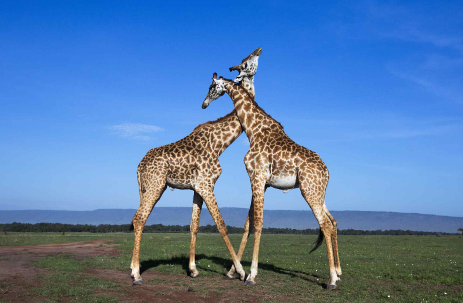
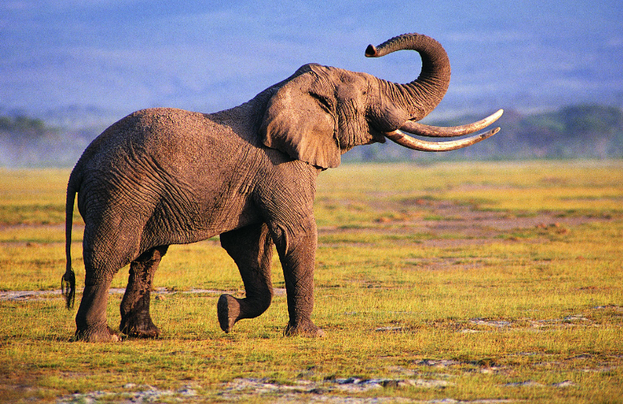

1.They Provide Endless Entertainment. 2.They Are Great Company, No Matter where you are . 3.They Lower Our Stress Levels. 4.They Make Exceptional Coworkers.
Get to know Girraffes!
The giraffe is a large African hoofed mammal belonging to the genus Giraffa. It is the tallest living terrestrial animal and t
he largest ruminant on Earth. Traditionally, giraffes have been thought of as one species, Giraffa camelopardalis, with nine subspecies.
Most recently, researchers proposed dividing them into four extant species due to new research into their mitochondrial and nuclear DNA,
and individual species can be distinguished by their fur coat patterns. Seven other extinct species of Giraffa are known from the fossil record.
The giraffe's distinguishing characteristics are its extremely long neck and legs, horn-like ossicones, and spotted coat patterns. It
is classified under the family Giraffidae, along with its closest extant relative, the okapi. Its scattered range extends from Chad in the
north to South Africa in the south and from Niger in the west to Somalia in the east. Giraffes usually inhabit savannahs and woodlands. Their
food source is leaves, fruits, and flowers of woody plants, primarily acacia species, which they browse at heights most other ground-based herbivores cannot reach.
Lions, leopards, spotted hyenas, and African wild dogs may prey upon giraffes. Giraffes live in herds of related females and their offspring or
bachelor herds of unrelated adult males but are gregarious and may gather in large groups. Males establish social hierarchies through "necking",
combat bouts where the neck is used as a weapon. Dominant males gain mating access to females, which bear sole responsibility for rearing the young.
The giraffe has intrigued various ancient and modern cultures for its peculiar appearance and has often been featured in paintings, books, and
cartoons. It is classified by the International Union for Conservation of Nature (IUCN) as vulnerable to extinction. It has been extirpated from many
parts of its former range. Giraffes are still found in many national parks and game reserves, but estimates as of 2016 indicate there are approximately 97,500 members of Giraffa in
the wild. More than 1,600 were kept in zoos in 2010.

Get to know Elepents!
Elephants are the largest living land animals. Three living species are currently recognised: the African bush elephant (Loxodonta africana), the African forest
elephant (L. cyclotis), and the Asian elephant (Elephas maximus). They are the only surviving members of the family Elephantidae and the order Proboscidea; extinct
relatives include mammoths and mastodons. Distinctive features of elephants include a long proboscis called a trunk, tusks, large ear flaps, pillar-like legs, and tough
but sensitive grey skin. The trunk is prehensile, bringing food and water to the mouth and grasping objects. Tusks, which are derived from the incisor teeth, serve both
as weapons and as
tools for moving objects and digging. The large ear flaps assist in maintaining a constant body temperature as well as in communication. African elephants have larger
ears and concave backs, whereas Asian elephants have smaller ears and convex or level backs.
Elephants are scattered throughout sub-Saharan Africa, South Asia, and Southeast Asia and are found in different habitats, including savannahs, forests, deserts,
and marshes. They are herbivorous, and they stay near water when it is accessible. They are considered to be keystone species, due to their impact on their environments.
Elephants have a fission–fusion society, in which multiple family groups come together to socialise. Females (cows) tend to live in family groups, which can consist of
one female with her calves or several related females with offspring. The leader of a female group, usually the oldest cow, is known as the matriarch.
Males (bulls) leave their family groups when they reach puberty and may live alone or with other males. Adult bulls mostly interact with family groups when looking
for a mate. They enter a state of increased testosterone and aggression known as musth, which helps them gain dominance over other males as well as reproductive success.
Calves are the centre of attention in their family groups and rely on their mothers for as long as three years. Elephants can live up to 70 years in the wild. They communicate
by touch, sight, smell, and sound; elephants use infrasound and seismic communication over long distances. Elephant intelligence has been compared with that of primates and cetaceans.
They appear to have self-awareness, and possibly show concern for dying and dead individuals of their kind.
African bush elephants and Asian elephants are listed as endangered and African forest elephants as critically endangered by the International Union for Conservation of Nature (IUCN).
One of the biggest threats to elephant populations is the ivory trade, as the animals are poached for their ivory tusks. Other threats to wild elephants include habitat destruction and conflicts
with local people. Elephants are used as working animals in Asia. In the past, they were used in war; today, they are often controversially put on display in zoos, or employed for entertainment
in circuses. Elephants have an iconic status in human culture and have been widely featured in art, folklore, religion, literature, and popular culture.

Get to know Monkeys!
Monkey is a common name that may refer to most mammals of the infraorder Simiiformes, also known as the simians. Traditionally, all animals
in the group now known as simians are counted as monkeys except the apes. Thus monkeys, in that sense, constitute an incomplete paraphyletic
grouping; however, in the broader sense based on cladistics, apes (Hominoidea)
are also included, making the terms monkeys and simians synonyms in regard to their scope.
In 1812, Étienne Geoffroy grouped the apes and the Cercopithecidae group of monkeys together and established the name Catarrhini, "Old World
monkeys", ("singes de l'Ancien Monde" in French).[3][4][5] The extant sister of the Catarrhini in the monkey ("singes") group is the Platyrrhini
(New World monkeys).[3] Some nine million years before the divergence between the Cercopithecidae and the apes,[6] the Platyrrhini emerged within
"monkeys" by migration to South America from Afro-Arabia (the Old World),[citation needed][7][8] likely by ocean.[9][10][better source needed] Apes
are thus deep in the tree of extant and extinct monkeys, and any of the apes is distinctly closer related to the Cercopithecidae than the Platyrrhini are.
Many monkey species are tree-dwelling (arboreal), although there are species that live primarily on the ground, such as baboons. Most species
are mainly active during the day (diurnal). Monkeys are generally considered to be intelligent, especially the Old World monkeys.
Within suborder Haplorhini, the simians are a sister group to the tarsiers – the two members diverged some 70 million years ago.[11] New World
monkeys and catarrhine monkeys emerged within the simians roughly 35 million years ago. Old World monkeys and apes emerged within the catarrhine
monkeys about 25 million years ago. Extinct basal simians such as Aegyptopithecus or Parapithecus (35–32 million years ago) are also considered monkeys
by primatologists.